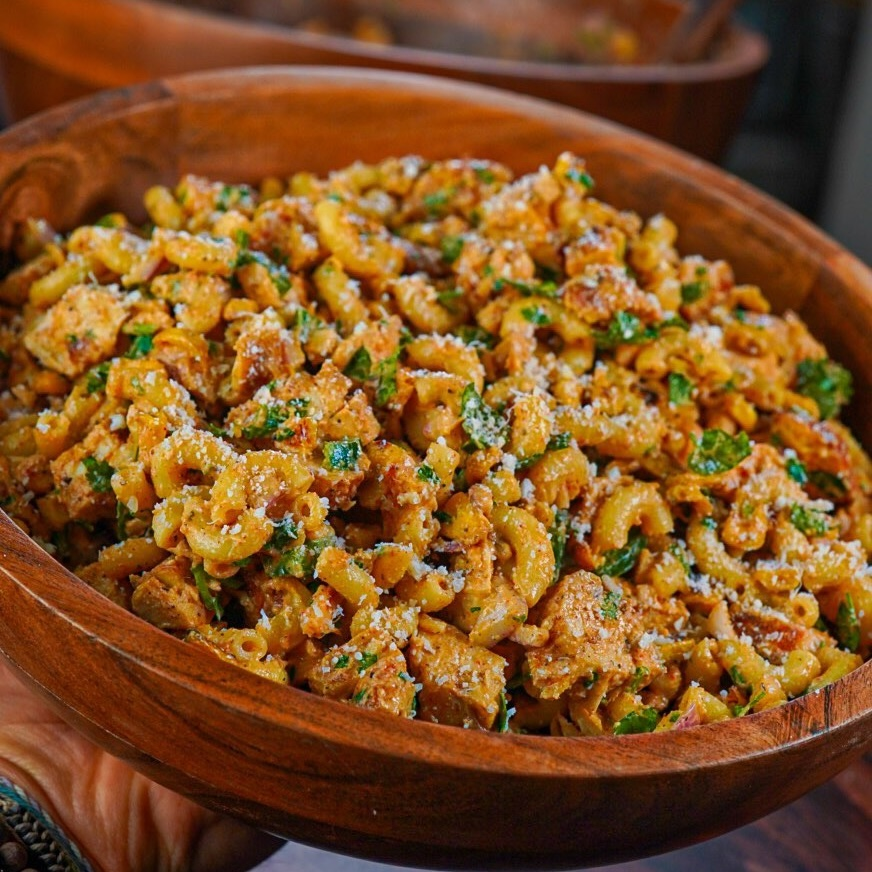

Bowl de Pasta y Elote picante
Ingredientes:
Aderezo:
- 200 g de yogur griego natural sin grasa
- 40 g de Sriracha
- Jugo de 1 lima mediana
- Pizca de ralladura de lima (de la lima que exprimiste)
- Sal marina
- Pimienta negra
Ensalada de pasta:
- 224 g de pasta de codo
- 1 bolsa de maíz dulce congelado (340g)
- 680 g de pechuga de pollo (pesado crudo)
- 100 g de cebolla roja
- 40 g de jalapeño
- 15 g de cilantro
- 15 g de ajo picado
- 20 g de queso parmesano (¡Cojita si lo tienes!)
- 10 g de levadura nutricional
- 1 cucharadita de sal marina
- 1 cucharadita de pimienta negra
- 1 cucharadita de ajo en polvo
- ½ cucharadita de pimentón
- ¼ cucharadita de pimienta de cayena (omitir si no deseas que sea picante)
Instrucciones:
- Cocina la pasta de codo hasta que esté al dente y luego deja enfriar.
- Luego, precalienta tu sartén a fuego medio-alto y añade el maíz dulce congelado. Cocina hasta que se
doren. Condimenta con sal marina. Deja enfriar.
- Cocina las pechugas de pollo según tu preferencia. Recomiendo una sazón suave ya que la ensalada de
pasta tendrá un toque picante. Yo usé una sazón tipo blackened.
- Luego, mezcla todos los ingredientes del aderezo en un bol hasta que estén combinados.
- Ahora es momento de armar la ensalada de pasta. Asegúrate de usar un bol GRANDE para mezclar todo.
Esta receta es ideal para preparar comidas, así que después de mezclar en el bol grande, puedes
distribuirlo en recipientes individuales para preparación de comidas. Esta receta rinde
aproximadamente 3.5 porciones GRANDES. ¡Disfruta!